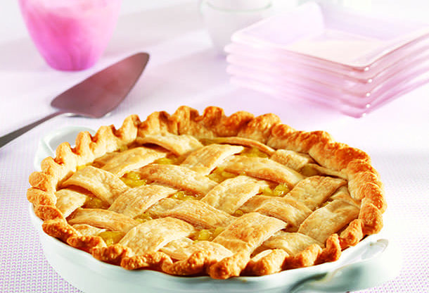

Pineapple Pie

A pie is a baked dish wich is usually made of a pastry dough casing that
contains a filling of various sweet or savoury ingredients. In this recipe,
we are going to learn how to make a good and tasty pie with pineapple as
our filling.
Ingredients
- 1 (20 ounce) can crushed pineapple with juice
- 1 (16 ounces) sugar
- 3/4 cup white sugar
- 3 tablespoons cornstach
- 1 tablespoon lemon juice
- 1 (14.1 ounce) package double-crust pie pastry, thawed
- 2 tablespoons milk
- 1 tablespoon white sugar
Step-by-step
-
Preheat the oven to 425 degrees F (220 degrees C)
-
Combine crushed pineapple with juice, sugar, cornstach, and lemon
juice in a medium saucepan. Cook and stir over medium heat until thickened
then boil for 1 minute. Allow filling to cool slightly.
-
Line a 9-inch pie dish with 1 crust. Pour filling into the prepared
die dish. Cover with remaining crust; press and flute the edges to seal.
Cut a few steam vents on top, brush with milk, and sprinkle with sugar.
-
Bake in the preheated oven until golden brown, about 35 minutes.
Serve chilled or at room temperature.
- Enjoy your tasty pineapple pie!